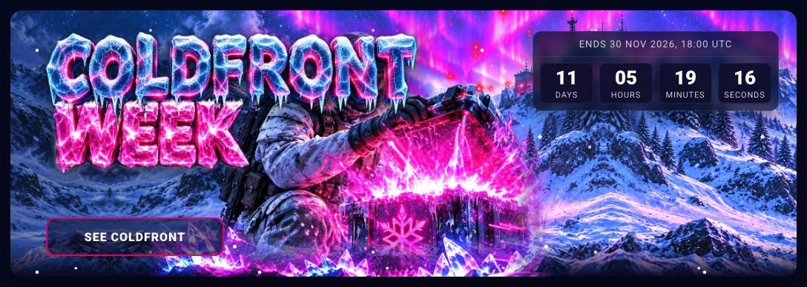
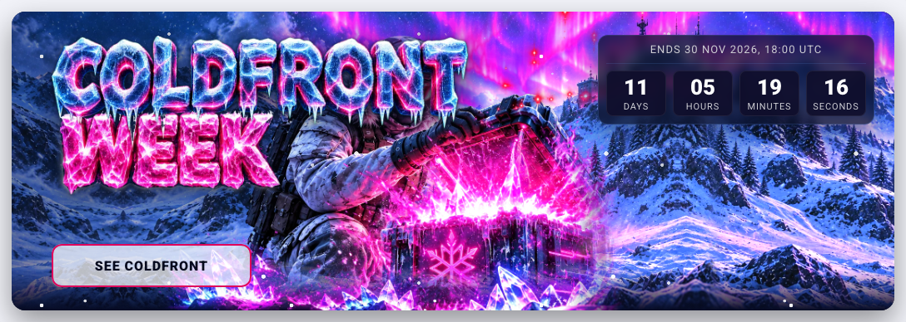

Event banner
An event's scene from edge to edge: its title as a logotype, the countdown and the one act over it (D-209, comp B). Four still layers share one frame and each moves on its own, which is the point of it: it is the main stage, and the motion is carried as it was approved (D-194, D-235). Everything on this page is drawn by design/system/components/event-banner.css through index.css.
Anatomy
| Part | Class or atom | What to change there |
|---|---|---|
| The scene | .banner (its ::before and ::after), .banner__art (its ::before and ::after) | the four still layers: the plate, the aurora and the far snow, the soldier with the case, the case's light and the near snow. Each moves on its own timing; the pictures are art tokens |
| The story | Media slot as .media.banner__story, a video inside | nothing in the slot itself: the molecule only fades it in over the layers once a page's script marks the banner .is-story, and never for reduced motion |
| Title | .banner__title | the event's name; it is drawn as the logotype picture and the words stay for a screen reader |
| Countdown | .banner__clock, .banner__cell (a number and a unit), .banner__end | the four cells and the end line over them; a role of timer with its name. The numbers are set by the page's script |
| The act | Button: ghost L, with .banner__act | nothing in the Button. .banner__act places it and lays a light across it every few seconds and at once under the pointer |
- The molecule's own: the scene, the title, the countdown and the placing of the act. Held, not redrawn: the Media slot and the Button, each with its own states.
- On a stand page the countdown is a still sample: no script loads here (the countdown's numbers and the story's
.is-storyare the product's scripts, which move into the system at step 8).
Variants and sizes
One form, no variants. It is cut by the window, as Home lays it, and the cuts below are read from the render of the same markup at each width (the heights from the banner, the rest from its parts).
| Window | Cut | Banner | Title | Countdown | Act |
|---|---|---|---|---|---|
| under 600 (360, 390) | a phone: as tall as the window is wide, never over 400; no corner | 360 x 360, 390 x 390 | 317 x 131, 320 x 132 | 328 x 72, 358 x 72, over the act | 328 x 52, 358 x 52, full width |
| 600 to 899 (700) | the wide cut at 340, title top left, countdown top right, act at the foot | 700 x 340 | 300 x 124 | 332 x 108 | 240 x 52 |
| 900 and up (1000, 1440) | a block with its 16px corner at 360, 60px cells from 900 to 1099 | 1000 x 360, 1440 x 360 | 500 x 206 | 284 x 108, 332 x 108 | 240 x 52 |
| 1200 and up | the title and the act keep v4's column, a 48px gutter | as above | as above | as above | as above |
The sample at the top of this page is at this window. The act is the large ghost at every width (D-228), so the cost of the money is never hidden by it (design principle 3 holds: the banner carries no price).
- Axis: the window, never the content. The three cuts above answer the window's width, not the banner's own, as Home lays it.
- Story playing (
.is-story). A page's script adds the class once the video in the Media slot plays: the slot fades in over the layers (--motion-banner-fade) and they hold still under it, and on a phone the soldier and the case fade out. The video is the product's (3.5 MB) and is not loaded on the stand, so the state is named here and not drawn.
When to use
Use it once at the head of Home when a named event runs, to say what it is, when it ends and the one place to go: "Coldfront week", "Ends 30 Nov 2026, 18:00 UTC", "See Coldfront". It has an end time on it, so a banner without a real end is not one. It is the main stage (design principle 4) and its motion has a job, to keep the platform alive and to amplify the event (principle 2); it carries no price and no chance, so it never stands where money is spent (principle 3).
Rule and anti-rule
Use it
Home's event banner: one banner above the page's H1, one act, a countdown that ends. At rest it moves slowly; under the pointer the case flares and the soldier leans in.
Take another component
A page's own title and a trust line is the Hero. A mode that is live or not launched is a Mode card. A daily free case is the Daily ladder. A notice that says what happened is a Status notice. A second banner on one page is refused: one stage, one event.
States
Live at rest, on this page's theme: point at the banner, then reach the act with Tab. The act's own hover, press and focus ring are the Button's, on its page.
Snapshots of the same instance, dark on the left and light on the right, taken with reduced motion, so the flare is a still brightening and the soldier does not lean. The base set is shot once, on the banner.


--filter-banner-flare-still --banner-lean- The same answer, said once: focus-visible on the act draws the same flare as a pointer over the banner (the scene brightens, the soldier leans in, the light crosses the act at once), and the focus ring itself is the Button's
--line-focus. The banner has no press: only its act is a control. - Reduced motion: every layer stands still, the story is not shown, the act's light does not cross, and the flare is a step, not a pulse (
--filter-banner-flare-still). - The banner is a dark scene in both themes. The light snapshot shows the scene unchanged, the countdown cells and the ink on the scene on-plate roles, and the ghost act as the Button draws it in the light theme.
node design/kit/tools/shoot-states.js http://localhost:8765/ event-banner # re-shoot after a change to event-banner.css or its tokens node design/kit/tools/shoot-states.js http://localhost:8765/ event-banner --check # step 9: fails if a snapshot drifted
In the code
| Token | Kind | Dark | Light |
|---|
Read live from tokens.css. Geometry, type and motion come straight from the primitives and the block's own --banner-* sizes. Twenty-one colours, shadows, filters and gradients are read directly and wait for step 9, each in this block only: --color-banner, -banner-clock-phone, -banner-cell, -banner-rule, --shadow-banner, -banner-clock, -banner-title, --filter-banner-plate, -flare, -flare-still and eleven --gradient-banner-* (shade, foot, hero mask, art mask, story mask, sweep and the two snows, with their phone cuts).
File: design/system/components/event-banner.css, loaded by design/system/index.css in the molecules' group. The seven keyframes (banner-plate, -hero, -aurora, -pulse, -snow-near, -snow-far, -sweep) are carried with it, since no other block names them.
<section class="banner" aria-label="Event"> <span class="media banner__story" aria-hidden="true"><video ...></video></span> <div class="banner__art" aria-hidden="true"></div> <p class="banner__title">Coldfront week</p> <div class="banner__clock" role="timer" aria-label="..."> four .banner__cell and .banner__end </div> <a class="button button--ghost button--l banner__act" href="...">See Coldfront</a> </section>
Stands on: Home and the design index. Until step 8 those screens still read kit.css; step 6 moves their markup onto this file's form.